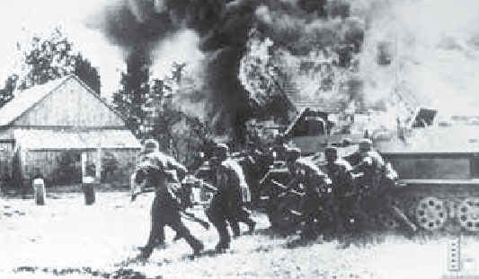
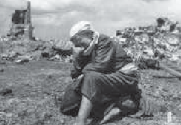
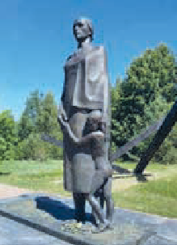
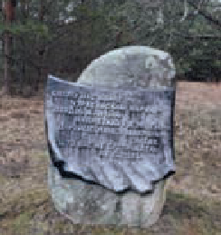
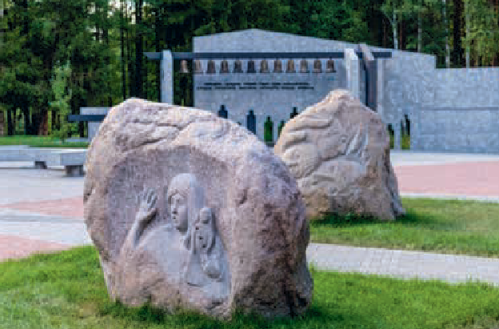
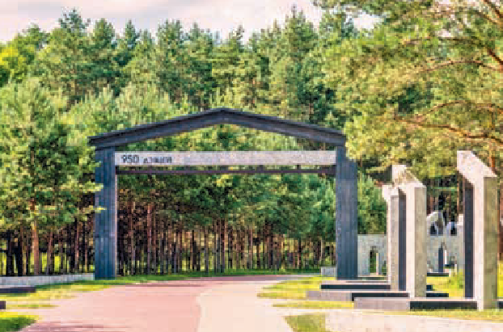

Карательные операции
Карательные операции, как страшное средство реализации политики геноцида
Страшным средством реализации политики геноцида стали карательные операции нацистов (в немецких документах они называются «акции усмирения»).
В годы Великой Отечественной войны на белорусских землях было проведено не менее 187 крупных карательных операций.
Карательные операции нацистов преследовали следующие цели:
- решение «партизанского вопроса» (окружение и уничтожение партизан; оттеснение их от коммуникаций; «срезание» партизанских зон и т. д.);
- создание так называемых мёртвых зон, превращённых в «выжженную пустыню»;
- конфискация сельскохозяйственной продукции, продовольствия и скота;
- захват в плен мирного населения для последующей отправки на принудительные работы в Германию и другие страны Европы.
Нацистские оккупанты нередко с целью сокрытия своих истинных целей употребляли в высшей степени циничные названия для карательных операций: например, «Зимнее волшебство», «Весенний праздник» (в некоторых источниках «Праздник весны»), «Праздник урожая», «Весенний хоровод», «Охота на зайцев», «Прогулка на Троицу» и др.
 Немецко-фашистские оккупанты в подожжённой ими деревнеКарательная операция «Зимнее волшебство» проводилась на территории современных Верхнедвинского и Россонского районов Витебской области в феврале – марте 1943 года.
Её результаты, по немецким документам, выглядят так: 439 сожжённых населённых пунктов, около 70–80 убитых партизан, 10–12 тыс. уничтоженных мирных граждан, более 7 тыс. угнанных (несколько тысяч из которых впоследствии погибло), огромное количество отнятого скота, отравленные колодцы.
Особыми зверствами в этой карательной операции отметился 2-й литовский вспомогательный полицейский батальон под командованием Антанаса Людвико Импулявичюс-Импуленаса (известен под прозвищем «Минский мясник»).
С 20 мая по 26 июня 1943 года 118-й украинский полицейский батальон принимал участие в крупной карательной операции «Коттбус» на территории Бегомльского района БССР (в 1960 году район упразднён и разделён между нынешними Докшицким и Лепельским районами Витебской области и Борисовским районом Минской области).
Согласно боевому донесению командира боевой группы К. фон Готтберга от 28 июня 1943 года о проведённой операции «Коттбус», в которой участвовал 118-й полицейский батальон, убито в боях 6087 человек, расстреляно 3709, захвачено в плен 599, захвачено рабочей силы: мужчин — 4997, женщин — 1056.
Из сельскохозяйственной продукции захвачено: 3262 головы крупного рогатого скота, 2182 овцы, 904 лошади, 153 свиньи, 1618 овчин, 684 тонны зерна, 24 тонны картофеля, 70 тонн муки, 38 центнеров льносемян, 2 мешка льна и 2 мешка льняных ниток.
Методы карателей были крайне жестокими.
Ни в чём не повинных людей расстреливали в домах, на улице, в лесу, сгоняли жителей населённых пунктов в отдельные постройки и заживо сжигали, убивали всех: стариков, женщин и детей.
Таким образом, карательные операции были не только и не столько направлены против партизан — они стали одной из форм массового уничтожения населения в сельской местности.
Результатом многочисленных карательных операций стали тысячи сожжённых и уничтоженных сельских населённых пунктов.
Ни в одной республике бывшего СССР не было столько пострадавших и уничтоженных населённых пунктов, как в Беларуси, — сожжено не менее 11 726 сёл и деревень.
В нашей стране создана и действует единственная на постсоветском пространстве общедоступная база данных «Белорусские деревни, сожжённые в годы Великой Отечественной войны».
 Плачущая женщина у сгоревшего дома. 1941 г. Женщина с детьми у развалин собственного дома, разрушенного немецко-фашистскими оккупантами. 1943 г.
Женщина с детьми у развалин собственного дома, разрушенного немецко-фашистскими оккупантами. 1943 г.
Она размещена на официальном сайте Национального архива Республики Беларусь.
В рамках расследования Генеральной прокуратурой Республики Беларусь уголовного дела о геноциде белорусского народа в годы Великой Отечественной войны и в послевоенный период установлены факты уничтожения деревень и мирного населения литовскими военно-полицейскими формированиями на территории Минской области.
На территории Воложинского района в деревнях Доры и Углы совместно с немецкой армией действовали литовские военизированные полицейские формирования.
22 июля 1943 года деревня Доры оказалась в кольце карателей для проведения «санитарной» акции.
Это означало, что физически годных ждала отправка в Германию, остальных — уничтожение.
В деревне проживало на тот момент более 300 человек, 257 из них нацисты «отбраковали».
Женщин, детей и стариков вместе со священником заперли в деревянном храме и сожгли заживо.
В память о погибших в 1961 году на фундаменте сожжённой церкви был установлен памятник, а в 1991 году — мемориальный комплекс «Вдовы. Погибших ждут вечно».
 Мемориал «Вдовы. Погибших ждут вечно» в агрогородке Доры (Воложинский район)
Мемориал «Вдовы. Погибших ждут вечно» в агрогородке Доры (Воложинский район)
Имеются также показания свидетеля А., 1936 года рождения, об участии белорусских коллаборационистов с повязками бело-красно-белого цвета в массовом сожжении и расстреле мирных жителей.
Сёстры Хатыни. Дальва
История белорусской деревни Дальва схожа с историей Хатыни.
Во время наступления Красной Армии немцы, чтобы обеспечить безопасность своих тылов от действий партизан, начали карательную операцию под названием «Корморан»
В этой операции кроме войск СС и военной полиции принимали участие также авиация и военные дивизии.
 Немецкие оккупанты уничтожают белорусскую деревню. 1944 г.Ранним утром 19 июня 1944 года со стороны соседней деревни Жердяжье выехали крытые грузовики с карателями и остановились на окраине Дальвы.
Плотным кольцом нацисты окружили деревню, а затем, подгоняя прикладами, согнали всех жителей на окраину и заперли в доме Василя Кухарёнка.
После этого каратели бросили в дом гранату и подожгли его.
Тех, кто пытался выбраться через горящую крышу, нацисты расстреливали из автоматов.
Расправившись с мирными жителями, палачи подожгли деревню с двух сторон.
 «Мать и дитя». Центральная скульптура мемориального комплекса «Дальва»
«Мать и дитя». Центральная скульптура мемориального комплекса «Дальва»
Эта трагедия произошла за считанные дни до освобождения Беларуси от немецко-фашистских захватчиков.
Дальва стала последней деревней, которую гитлеровцы уничтожили, уходя с нашей земли.
В пламени пожара погибли 29 детей, 13 женщин и двое мужчин.
Старшему из погибших было восемьдесят лет, а самому младшему — Косте Кухарёнку — около двух.
Вместе с дальвинцами были сожжены мальчик и девочка из других деревень: Юзик Гринь из Дедиловичей, который помогал родственнице по хозяйству, и Оля Фалькович из Вязовщины, которая накануне, в воскресенье, пришла в гости к подруге.
По счастливой случайности смог выжить 13-летний Николай Гирилович — рано утром мама разбудила его и попросила подменить отца, который пас лошадь.
Останки сожжённых дальвинцев в братской могиле захоронили жители соседних деревень и войска Красной Армии.
На могиле установили три креста.
Эти кресты символизировали три поколения: дедов, матерей и детей.
Николай Гирилович поклялся, что сохранит память об односельчанах, и посвятил этому делу всю жизнь.
Став взрослым, он организовал строительство мемориального комплекса на месте бывшей родной деревни.
15 июля 1973 года на месте сожжённой деревни Дальва в Логойском районе Минской области был открыт мемориальный комплекс (автор проекта — В. Теребун).
В центре композиции — скульптура «Мать и дитя».
На стене памяти перечислены имена и возраст всех погибших жителей.
Вдоль бывшей улицы установлены пять символических срубов из бетона.
На крыльце каждого сруба размещены скульптурные композиции из различных предметов мирного быта: инструменты плотника, серп, кринка для молока, кукла, букварь.
В память о каждом погибшем в дальвинской трагедии были высажены 44 берёзы.
На мемориальном камне установлена табличка с четверостишием:
Спаліў нас вораг чэрвеньскай парою —
Дзядоў, жанчын, падлеткаў і дзяцей.
Даруйце, людзі добрыя, за тое,
Што вас не сустракаем, як гасцей.
Память о жителях деревни также увековечена на мемориальных плитах Хатынского некрополя.
 Мемориальный камень с четверостишием в память о погибших жителях деревни Дальва Мемориальная плита с названием деревни Дальва в Хатынском некрополе
Мемориальная плита с названием деревни Дальва в Хатынском некрополе
Сёстры Хатыни. Ола
Накануне Великой Отечественной войны в деревне Ола Светлогорского района Гомельской области насчитывалось 34 двора и проживало 168 жителей.
Зимой 1943–1944 годов деревня оказалась в прифронтовой зоне.
Поскольку она находилась в глухой местности, здесь укрывались беженцы из соседних деревень.
По словам очевидцев, Ола в ту зиму была переполнена, в каждом доме жило по 30–40 человек.
Людьми были заняты все хозяйственные постройки, бани, погреба и землянки.
В ходе карательной операции в январе 1944 года погибли жители не только деревни Олы, но и 12 окрестных деревень, которые прятались здесь от немецко-фашистских оккупантов.
 Вход в мемориальный комплекс «Ола»
Вход в мемориальный комплекс «Ола»
В 6 часов утра 14 января 1944 года деревню окружил немецкий карательный отряд.
Под выстрелы и лай собак всех жителей согнали в большой колхозный сарай.
Тех, кто пытался бежать, расстреливали.
Тех, кто прятался в землянках и ямах, находили собаки.
Из сарая людей забирали группами, объясняя, что будут отвозить в тыл, но на самом деле отводили в другой конец деревни, заталкивали в дома и поджигали.
Тех, кто пытался спастись, убивали.
Выжить удалось немногим.
Одним из свидетелей трагедии стал житель Олы Артём Устименко, находившийся в партизанском отряде.
В тот страшный день он пришёл в родной дом.
Своими глазами видел, как каратели приблизились к деревне и окружили её.
Он решил, что пришли забирать мужчин, и спрятался на чердаке.
Почувствовав запах дыма, спрыгнул и затаился в кустах, где и пролежал до самого вечера.
А когда стемнело, встал и пошёл к тлеющим домам, но в живых уже никого не осталось.
Ольга Курлович с малолетним сыном притворилась мёртвой среди трупов.
Tарас Колеснев, истекая кровью, видел, как пулемётные очереди резали людей.
Гавриил Зыкун за несколько часов до трагедии ушёл с семьёй в лес, а по возвращении через несколько дней увидел сгоревшие хаты и погибших людей.
 Фрагмент мемориального комплекса «Ола»До освобождения деревни Красной Армией жители Олы не дожили всего две недели.
В начале 1945 года чрезвычайная комиссия Чирковичского сельского совета произвела подсчёт погибших в Оле жителей: 1758 человек, из них 950 детей, 508 женщин, 100 мужчин, 200 стариков.
В 1945 году в Брянске состоялся судебный процесс над военными преступниками, причастными в том числе и к сожжению деревни Олы.
В качестве свидетелей на судебном процессе присутствовали Артём Устименко и Ольга Курлович.
После Великой Отечественной войны деревня Ола не возродилась.
В 1958 году на братской могиле, в которой были захоронены мирные жители и советские воины, установлен памятник — скульптура коленопреклонённого солдата с венком.
Всего в могиле захоронено 2253 человека.
Память о сожжённой немецко-фашистскими карателями деревне Оле отражена в мемориальном комплексе «Хатынь».
В 2020 году на месте уничтоженной деревни создан мемориальный комплекс «Ола».
В центре мемориальной зоны — символичный крест и колокол.
Рядом — звонница в виде стилизованного деревенского сарая с количеством колоколов по числу деревень, жители которых здесь погибли.
 Одна из зон мемориального комплекса «Ола»